Nintendo Switch
Atmosphere, hekate, instaladores, sigpatches, saves e controles.
14 links
| Vídeo | Projeto | O que faz | Pasta de origem | |
|---|---|---|---|---|
| FISHER x KITA ALEXANDER - ATMOSPHERE [LYRIC VIDE | 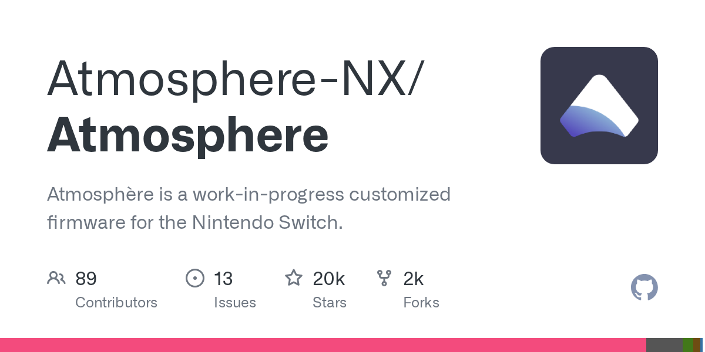 | Atmosphere-NX/Atmosphere | Custom firmware do Switch: é o desbloqueio em si. | NINTENDO SWITCH DESBLOQUEIO / GITHUB PROGRAMAS |
| An Danzza ☽ ☆ ☾ Hekate | 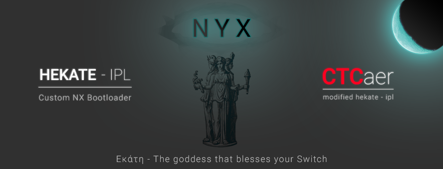 | CTCaer/hekate | Bootloader/payload do Switch, base de quase todo desbloqueio. | NINTENDO SWITCH DESBLOQUEIO / GITHUB PROGRAMAS |
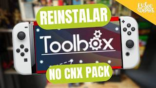 REINSTALAR HEKATE TOOLBOX NO CNX PACK! | 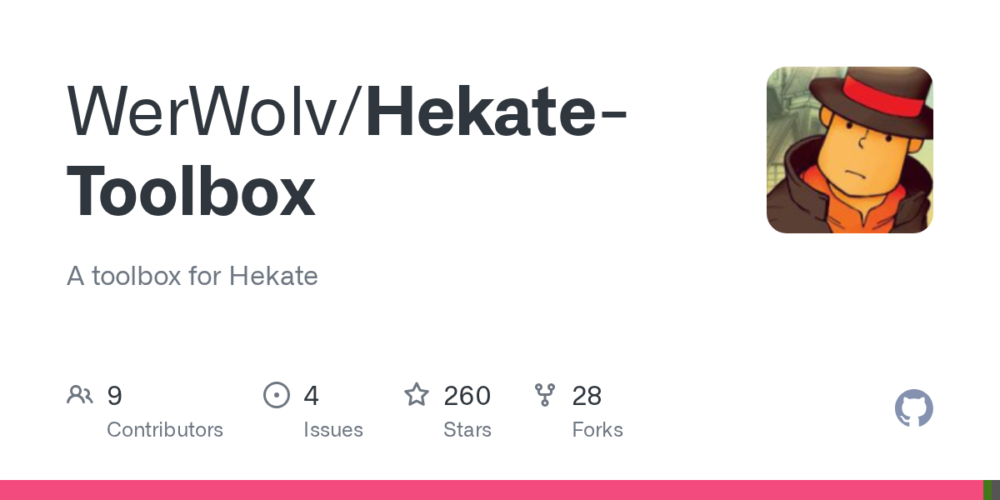 | WerWolv/Hekate-Toolbox | Manutenção pelo hekate: backup de partições, eMMC, etc. | NINTENDO SWITCH DESBLOQUEIO / GITHUB PROGRAMAS |
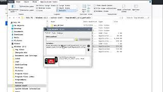 How to setup TegraRcmGui on your computer | 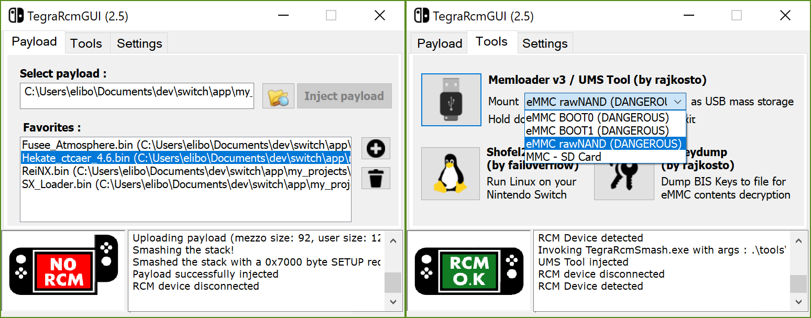 | eliboa/TegraRcmGUI | Manda o payload do desbloqueio para o Switch pelo PC (RCM). | NINTENDO SWITCH DESBLOQUEIO / GITHUB PROGRAMAS |
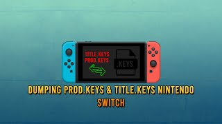 Como Instalar e Usar o Lockpick RCM para Extrair | 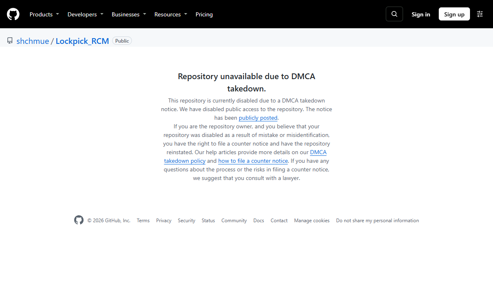 | shchmue/Lockpick_RCM | Extrai as chaves do Switch (necessário para vários programas). | NINTENDO SWITCH DESBLOQUEIO / GITHUB PROGRAMAS |
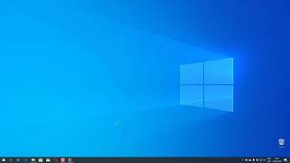 Instalação direto vis usb ou wiffi - Tinleaf | 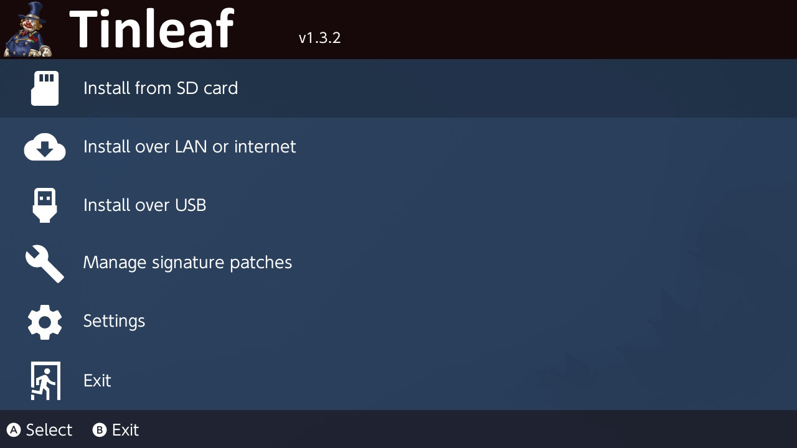 | blawar/tinleaf | Instalador de NSP/NSZ no Switch (cartão ou rede). | NINTENDO SWITCH DESBLOQUEIO / GITHUB PROGRAMAS |
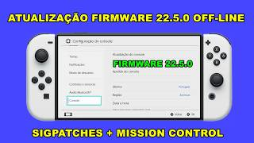 ATUALIZAÇÃO FIRMWARE 22.5.0 - OFF-LINE ( SIGPATC |  | ITotalJustice/sigpatch-updater | Baixa e atualiza os sigpatches do Atmosphere. | NINTENDO SWITCH DESBLOQUEIO / GITHUB PROGRAMAS |
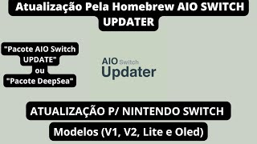 Uma Alternativa p/ Você Atualizar Seu Switch Sem | 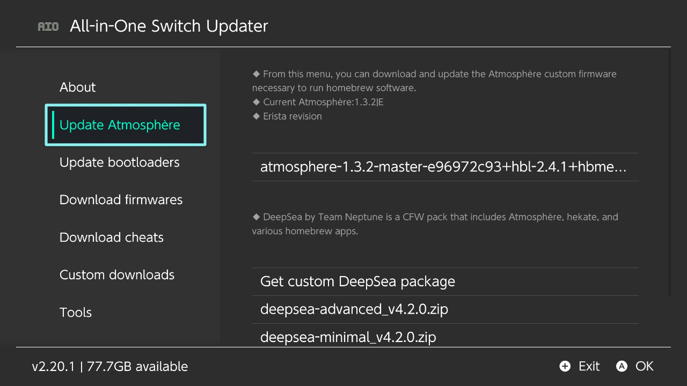 | HamletDuFromage/aio-switch-updater | Atualiza firmware, sigpatches e homebrews num app só. | NINTENDO SWITCH DESBLOQUEIO / GITHUB PROGRAMAS |
| GUIA DO INICIANTE 2024 NINTENDO SWITCH - DICAS - | 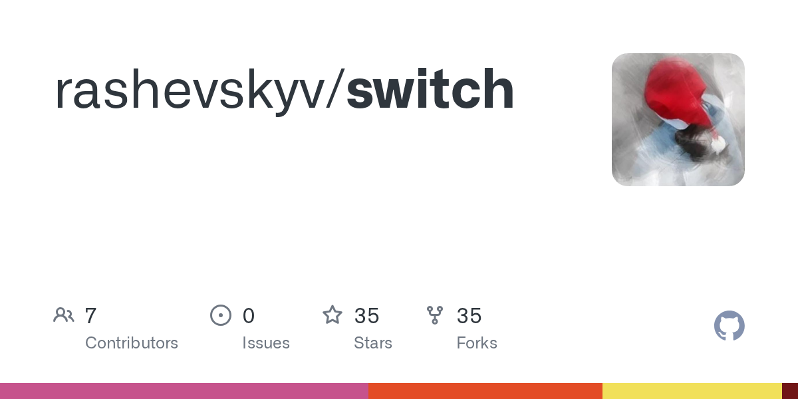 | rashevskyv/switch | Pacote KEFIR: arquivos de desbloqueio prontos. | NINTENDO SWITCH DESBLOQUEIO / GITHUB PROGRAMAS |
| AULA 02 - TUTORIAL MODELO CHECKPOINT STABLE DIFF | 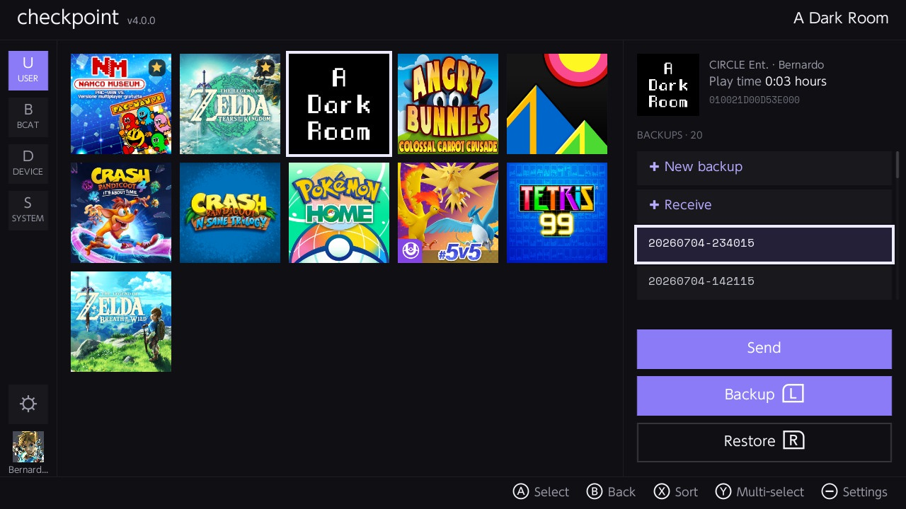 | FlagBrew/Checkpoint | Backup e restauração de saves do Switch. | NINTENDO SWITCH DESBLOQUEIO / GITHUB PROGRAMAS |
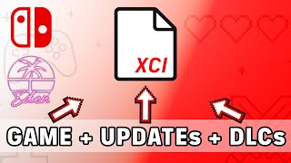 Switch: O jeito certo de unir jogo + update + DL | 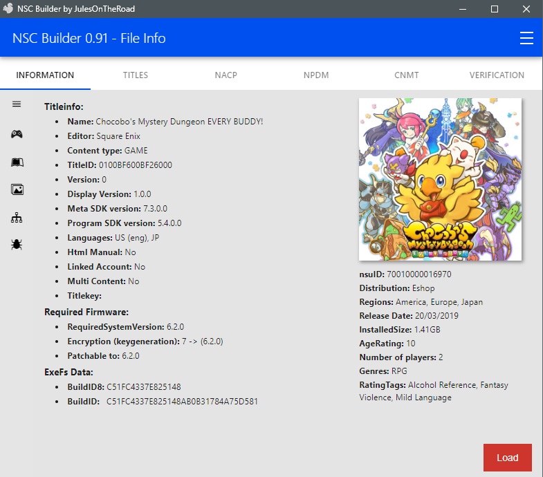 | julesontheroad/NSC_BUILDER | Converte e monta NSP/XCI do Switch no PC. | NINTENDO SWITCH DESBLOQUEIO / GITHUB PROGRAMAS |
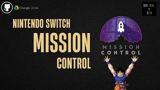 Tutorial MissionControl: Usa mandos de PS4, Xbox | 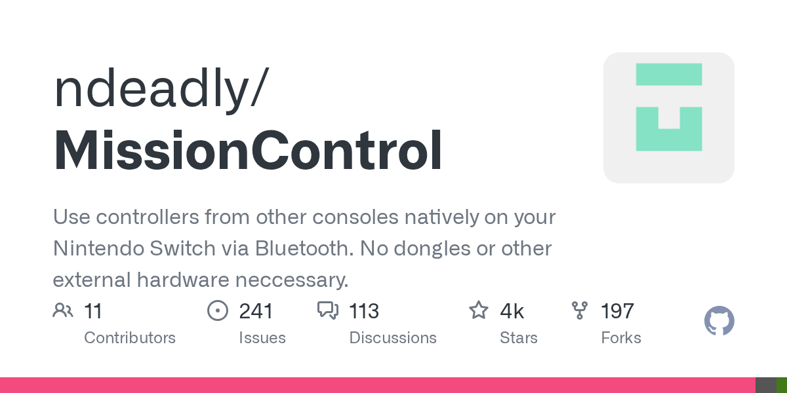 | ndeadly/MissionControl | Usa controles de PS/Xbox no Switch por Bluetooth. | NINTENDO SWITCH DESBLOQUEIO / GITHUB PROGRAMAS |
| SYS CON | USE OUTROS CONTROLES NO SEU SWITCH DE | 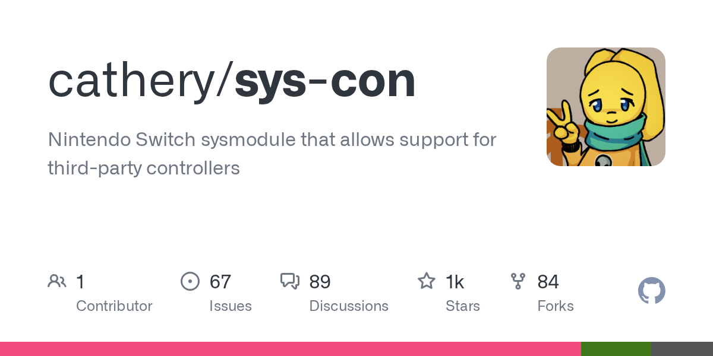 | cathery/sys-con | Sysmodule para controles genéricos no Switch. | NINTENDO SWITCH DESBLOQUEIO / GITHUB PROGRAMAS |
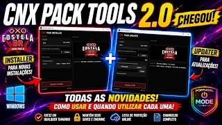 CNX PACK TOOLS 2.0 CHEGOU! TODAS AS NOVIDADES + | AMSNX/cnxpack-updater | Atualizador de pacotes do CNX (CFW alternativo). | NINTENDO SWITCH DESBLOQUEIO / GITHUB PROGRAMAS |